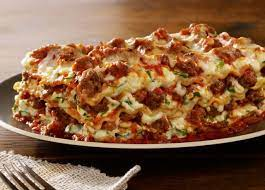

Odin-recipes

Lasagna
Lasagna Ingredients
This lasagna recipe is good for family night or you can make larger portions for events. Your family and friends will enjoy this dish wether its a Sunday evening or at a party.
- 1 (16 ounce) package Johnsonville® Italian Ground Sausage
- 2 garlic cloves, minced
- 4 cups marinara sauce
- 1 teaspoon dried oregano
- 2 (15 ounce) containers ricotta cheese
- 1 egg, beaten
- ½ cup grated Parmesan cheese, divided
- 2 cups fresh spinach, chopped
- 2 cups shredded mozzarella cheese
Steps
- In a skillet, cook sausage, onion and garlic until pork is no longer pink and onion is tender; drain. Add marinara sauce and oregano; simmer for 5 minutes. In a bowl, combine ricotta cheese, egg, 1/4 cup Parmesan and spinach.
- In a greased 13-in. x 9-in. x 2-in. baking dish, spread 1 cup meat sauce. Arrange 3 noodles over sauce. Spread one-fourth of the ricotta cheese mixture over the noodles, top with 1 cup of meat sauce. Sprinkle with 1/2 cup mozzarella cheese. Repeat process 3 times. Top with remaining Parmesan cheese. Bake, uncovered, at 350 degrees F for 40 to 45 minutes. Let stand for 10 minutes before cutting. Serve.